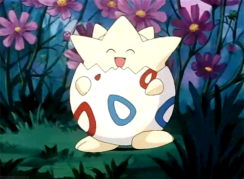

Criando Treinadores
Antes de começar a jogar Pokémon Tabletop United, primeiro você precisa criar seu personagem Treinador, que será seu alter ego no mundo Pokémon. Seu personagem será o foco do jogo e das emocionantes aventuras que você terá, portanto, criar o personagem certo para você e para a campanha do jogo é muito importante!
Existem muitas opções quando se trata de construir seu personagem, mas no início desta parte queremos nos concentrar no processo passo a passo, para que você veja referências de páginas e hiperlinks dispostos onde quer que você vá para outra parte do livro para escolher opções para criar seu próprio Treinador Pokémon. Antes de começar, você desejará preencher uma ficha de personagem em branco.
Passo 1 – Conceito de Personagem
Você pode ficar tentado a começar a analisar números imediatamente, especialmente se for um jogador de RPG experiente. Não! Ou pelo menos dê uma olhada para ter uma ideia do que está disponível antes de voltar e pensar em quem você deseja que seu Treinador seja.
É importante nesta etapa conversar com os outros jogadores e com o Mestre sobre que tipo de campanha você jogará e que tipos de personagens o Mestre está procurando. Você pode estar acompanhando fielmente o anime e o mangá e todas as crianças brincando em sua primeira aventura Pokémon, ou seu Mestre pode ter em mente algo mais específico, como interpretar novatos em uma agência de detetives sob o comando de Looker ou até mesmo como capangas de Equipe Rocket. Você só precisa de uma breve ideia por enquanto e poderá expandi-la mais tarde.
Passo 2 – Criando um Background
Um Background é uma breve frase que descreve as experiências de vida do seu personagem e ajuda a determinar os Níveis de Habilidade iniciais do seu Treinador. Dependendo de como o seu Treinador chegou onde está hoje, ele terá adquirido habilidades diferentes e negligenciado outras.
As habilidades representam o interesse consciente e o treinamento que seu personagem usa parainteragircom o mundo, além de incorporar o talento natural de um Treinador. As habilidades são usadas para as interações mais básicas entre você e o mundo do jogo e ajudam a determinar para quais classes e recursos seu treinador se qualifica. Você pode querer ler as habilidades em Pokémon Tabletop United antes de continuar escrevendo um histórico e a próxima etapa na criação do personagem.
Este é o passo onde você começa a pegar o seu Conceito de Personagem e desenvolvê-lo um pouco. Concentre-se no que seu treinador teria aprendido e aprendido, seja por necessidade ou por interesse próprio, à medida que crescia. E então pense sobre quais poderiam ter sido seus pontos fracos e que tipo de habilidades desenvolvidas eles teriam negligenciado naquele período. Divirta-se com esse processo! Lembre-se, você está determinando a linha de base a partir da qual seu Treinador crescerá e se desenvolverá e deve certificar-se de que é algo que o deixa completamente satisfeito.
Todas as Habilidades, exceto aquelas modificadas pelo seu Background, começam no Nível Destreinado antes que as Vantagens e Características sejam escolhidas, então suas escolhas aqui terão um enorme impacto em seu personagem.
Uma lista de exemplos de Backgrounds pode ser encontrada abaixo, mas você pode simplesmente optar por criar os seus próprios, com a aprovação do Mestre, é claro. Basta escolher 1 habilidade para aumentar para o nível de Adepto e 1 habilidade para aumentar para o nível de novat. Em seguida, escolha 3 habilidades para diminuir uma classificação, até Patético. Essas Habilidades Patéticas não podem ser elevadas acima de Patéticas durante a criação do personagem. Certifique-se de dar um nome evocativo ao seu Background personalizado!
Exemplos de Background
Pelo menos ele é bonito
A aparência não é tudo… mas é melhor que nada, certo?
Rank Up: Charme – Adepto // Comando ou Intuição – Novato
Rank Down: Combate, Intimidação e Percepção.
Rato de Biblioteca
Por que sair? Tudo o que você precisa saber está aqui na Bulbapedia!
Rank Up: Uma Habilidade Educacional para Adepto, uma para novato
Rank Down: Atletismo, Acrobacia e Combate.
Eremita
Você não gosta das pessoas e elas tendem a não gostar de você.
Rank Up: Uma habilidade de educação em adepto, Percepção – novato
Rank Down: Charme, Astúcia e Intuição
Treino Fitness
Talvez você seja um soldado de carreira; talvez você seja apenas um louco por fitness.
De
qualquer forma, olha só esse corpo.
Rank Up: Atletismo Adepto, Acrobacia novato
Rank Down: Astúcia, Intuição, Foco
Veterano
A idade vem com sabedoria e experiência, e quadris ruins.
Rank Up: Foco Adepto, Intuição ou Percepção em novato,
Rank Down: Acrobacia, Combate, Educação Tecnológica
Rápido e pequeno
Você é meio magro e fraco, mas inteligente e rápido.
Rank Up: Adepto em Acrobacia, Novato em Astúcia
Rank Down: Atletismo, Intimidação, Comando
Duro
Você é o tipo de cara que provavelmente acabará com um apelido como ‘Knuckles’ ou
‘Spike’.
Rank Up: Combate Adepto, Intimidação novato
Rank Down: Charme, Astúcia, Percepção
Língua Afiada
Você sempre sabe exatamente o que dizer, mas é melhor ninguém pedir para você se
esforçar.
Rank Up: Astúcia Adepta, Charme ou Intimidação Novato
Rank Down: Atletismo, Combate, Sobrevivência
Rattata de rua
Crescer na rua é difícil. Bem, para todos aqueles outros idiotas.
Rank Up: Astúcia Adepto, Percepção ou Furtividade em Novato
Rank Down:Foco, Educação Geral e Tecnológica
Super Nerd
Você é inteligente e astuto, mas suas habilidades sociais...
Rank Up: Educação Tecnológica em Adepto, Astúcia em Novato
Rank Down:Charme, Intimidação, Intuição
Criança Selvagem
Talvez você tenha sido criado por Mightyenas. Ou talvez você tenha tido pais
péssimos.
Rank Up: Sobrevivência Adepta, Atletismo ou Furtividade em Novato
Rank Down:Educação geral, tecnológica e médica
Lembrando que você pode criar sua própria origem, apenas converse com seu mestre sobre o que você deseja criar!
Passo 3 – Escolha suas vantagens
As “vantagens” (ou edges) são usadas para representar o treinamento e o desenvolvimento de um personagem nos amplos campos cobertos pelas Habilidades(ou Perícias) deste jogo. O tipo mais básico de Vantagem é uma Habilidade de Vantagem que simplesmente aumenta a classificação de uma de suas habilidades em um. Lembre-se de que você não pode aumentar as habilidades acima de Novato no seu nível inicial.
No entanto, existem também outras Vantagens que representam um treinamento mais específico dentro da área de uma única Habilidade, como treinar para ser um melhor Nadador na Habilidade de Atletismo ou aprender a preparar melhor seu Pokémon para Contests na Habilidade de Charme.
Os Treinadores Iniciais começam com quatro Vantagens para distribuir como acharem adequado.
Passo 4 – Escolha seus Recursos
Os recursos são o que realmente fazem um treinador se destacar e fornecem a maior parte de sua definição e funcionalidade no jogo. Existem vários recursos gerais disponíveis para todos os treinadores no Pokémon Tabletop United, mas a maioria dos recursos está vinculada às classes de treinadores.
Classes são recursos especiais que atuam como portas de entrada para agrupamentos de recursos relacionados que estão fortemente vinculados a um conceito específico. Se você estiver familiarizado com outros RPGs, mesmo que não sejam RPGs de mesa, provavelmente conhece o conjunto comum do Guerreiro, do Ladino e do Mago como classes de personagens. A mesma ideia se aplica aqui, mas você encontrará classes como Ace Trainer, Coordenador e Especialista em Captura, que estão muito mais ligadas aos conceitos de Pokémon.
Os Treinadores Iniciantes começam com quatro Recursos para distribuir como acharem adequado. Eles também escolhem um recurso de treinamento para obter, independentemente dos pré-requisitos.
A maioria dos jogadores achará mais útil gastar todos ou a maior parte de seus Recursos iniciais em Recursos de uma Classe, quando possível, para melhor definir seus Treinadores no início do jogo. Embora seja tecnicamente possível ter três ou quatro classes diferentes como treinador inicial, isso irá sobrecarregá-lo com os pré-requisitos de habilidade para essas classes e pode diluir seu conceito de personagem. Considere começar com apenas uma ou duas classes e desenvolver dentro delas e talvez um recurso geral.
Você pode seguir os Passos 3 e 4 em qualquer ordem, alternando entre gastar Vantagens e Recursos conforme melhor lhe convier.
Passo 5 – Status de Combate
Pokémon Tabletop United usa as mesmas 6 estatísticas de combate usadas nos videogames Pokémon. Se você está familiarizado com os videogames, eles dispensam apresentações. Ainda assim, há uma breve explicação sobre cada uma delas abaixo.
As 6 estatísticas de combate são HP, Ataque, Defesa, Ataque Especial, Defesa Especial e Velocidade.
- HP determina seus Pontos de Vida, que representam sua capacidade de receber golpes e continuar na batalha.
- Ataque representa o quão forte você pode atingir Fisicamente e é adicionado à jogada de dano de todos os Danos Físicos que um Treinador ou Pokémon causa.
- Defesa é usada para evitar e resistir a ataques físicos. Sempre que um Treinador ou Pokémon sofre dano Físico, ele primeiro subtrai sua estatística de Defesa do dano, antes de subtrair o dano de seus Pontos de Vida. Além disso, para cada 5 pontos que um Pokémon ou Treinador tiver em Defesa, eles ganham +1 de Evasão Física, até um máximo de +6 com 30 de Defesa.
- Ataque Especial representa o quão forte você pode acertar com ataques Especiais e é adicionado à jogada de dano de todos os Danos Especiais que um Treinador ou Pokémon causa.
- Defesa Especial é usada para evitar e resistir a ataques especiais. Sempre que um Treinador ou Pokémon sofre dano especial, ele primeiro subtrai sua estatística de defesa especial do dano, antes de subtrair o dano de seus pontos de vida. Além disso, para cada 5 pontos que um Pokémon ou Treinador tiver em Defesa Especial, eles ganham +1 de Evasão Especial, até um máximo de +6 com 30 de Defesa Especial.
- Velocidade é uma medida da rapidez de um treinador ou Pokémon e determina a ordem dos turnos no combate. Além disso, para cada 5 pontos que um Pokémon ou Treinador tem em Velocidade, eles ganham +1 de Evasão de Velocidade, até um máximo de +6 com 30 de Velocidade.
Os Treinadores Iniciais começam com 10 HP e 5 pontos cada no restante de suas Estatísticas de Combate. Você pode distribuir 10 pontos adicionais entre suas estatísticas de combate, mas não mais do que 5 pontos em uma única estatística.
Passo 6 – Status Derivados
Suas Habilidades, Estatísticas de Combate e muito mais alimentam uma série de outras estatísticas que são usadas em Combate, bem como Capacidades que determinam quanto peso seu personagem pode levantar, quão rápido ele pode se mover e muito mais. Para obter mais detalhes sobre como as Capacidades são usadas no jogo, consulte a seção Capacidades.
- Pontos de Ação (PA) são um recurso que os Treinadores usam para potencializar
seus
Recursos. Os treinadores têm 5 PA e mais 1 para cada 5 níveis de treinador. Um treinador de
nível 10
possui 7 PA, por exemplo. PA é atualizado no início de cada cena. Consulte o capítulo
Jogando o Jogo para mais informações.
Pontos de Ação = 5 + (Nível de treinador/5) - Pontos de Vida (PV) determinam quanta punição você pode receber em batalha. Se
um
Pokémon ou Treinador atingir 0 Pontos de Vida, ele será incapaz de realizar qualquer ação e
ficará
inconsciente. Os Pontos de Vida são derivados do HP e são calculados de forma diferente para
Pokémon
e para Treinadores.
PV do treinador = Nível do treinador x 2 + (HP x 3) +10 - Evasão ajuda treinadores e Pokémon a evitar ataques. Existem três tipos de
Evasão:
Evasão Física, Evasão Especial e Evasão de Velocidade. Para calcular esses valores de Evasão,
divida
a Estatística de Combate relacionada por 5 e arredonde para baixo. Você nunca pode ter mais de
+6 em
uma determinada Evasão apenas nas Estatísticas de Combate. Essas estatísticas derivadas e seus
usos
serão descritos com mais detalhes no capítulo Combate.
Evasão = Estatísica de Combate Relacionada/5 - Poder é a medida da força física bruta e da capacidade de levantar objetos
pesados.
O Poder de um Treinador começa em 4, mas é alterado por vários fatores.
- Se sua Habilidade de Atletismo for de Nível Novato ou superior, aumente o Poder em +1.
- Se sua Habilidade de Combate for de Nível Adepto ou superior, aumente o Poder em +1
- Velocidade de Movimento Terrestre é a rapidez com que um Treinador ou Pokémon
pode
se mover em terreno plano. Para os Treinadores, este valor é igual a três mais metade da soma
das
suas Classificações de Atletismo e Acrobacia. Por padrão, esse valor é 5.
Movimento Terrestre = 3 + [(Atlt + Acro)/2] - Velocidade de Natação determina o quão rápido um treinador pode nadar.
Velocidade de Natação = Velocidade de Movimento Terrestre/2 - Salto em Altura determina a altura em que um Treinador ou Pokémon salta em
metros.
O Salto em Altura de um Treinador começa em 0, mas é aumentado por vários fatores.
- Se sua Habilidade de Acrobacia for de Nível Adepto, aumente o Salto em Altura em +1.
- Se sua Habilidade de Acrobacia for de Nível Mestre, aumente o Salto em Altura em +1 adicional.
- Se você começar a correr ao pular, aumente o Salto em Altura em +1.
- Salto a Distância é a distância horizontal que um Treinador ou Pokémon pode
saltar
em metros.
Salto a Distância = Acro/2 - Arremesso é a distância que um treinador pode lançar Pokébolas e outros itens.
Arremesso = 4 + Atlt - Tamanho é o quão grande você é. Os treinadores são médios por padrão. O peso do seu treinador também é importante. Um treinador entre 25 e 50 quilos está na classe de peso 3. Entre 50 e 100kg está a Categoria 4. Acima disso está a Categoria 5.
Recursos e outros bônus que concedem aumentos gerais à Velocidade de Movimento apenas os concedem às Velocidades de Movimento que você já possui; dar a um Treinador um bônus de +4 em todas as suas Velocidades de Movimento não lhe concede vôo repentinamente. No entanto, recursos e habilidades que concedem aumentos de movimento específicos o fazem. Um recurso que concede +4 de Velocidade de Levitação faz com que aquele treinador tenha uma Velocidade de Levitação de 4, mesmo se ele ainda não tiver uma Velocidade de Levitação.
Passo 7 – Descrições Básicas
Seu personagem agora está praticamente completo no que diz respeito à mecânica do jogo, mas isso é apenas o começo. Agora é a hora em que você deve dar vida à aparência do seu personagem, sua personalidade e qualquer outra coisa que não seja abordada pela mecânica do jogo, mas que seja importante para definir uma pessoa. Escolha um nome! Você o usará pelo resto da campanha, portanto, certifique-se de estar satisfeito com o que escolher.
Neste ponto, você pode querer conversar com seu Mestre e com os outros jogadores sobre o desenvolvimento de uma história mais detalhada para seu personagem. Isso é opcional e não precisa acontecer em todas as campanhas. É perfeitamente normal encobrir a infância e focar na aventura que está por vir, mas em alguns tipos de campanha, é importante estabelecer de onde vem um personagem, como o encontro de um detetive com a morte nas mãos de alguns bandidos quando criança ou uma equipe. A infância difícil do membro do Rocket crescendo nas favelas com um pai solteiro.
Pode ser divertido conversar com outros jogadores e desenvolver uma espécie de interconexão frouxa ou história compartilhada entre seus Treinadores. Talvez todos vocês tenham frequentado a mesma escola de treinadores Pokémon ou até mesmo frequentado a mesma sala de aula. Alguns Mestres podem exigir que você estabeleça essas conexões entre os personagens antes do jogo começar, enquanto outros vão querer que você desenvolva seus relacionamentos organicamente durante o jogo.
Passo 8 – Escolha seu Pokémon
Mesmo que você comece a campanha com os Treinadores recebendo seus primeiros Pokémon, é uma boa prática fazer com que os jogadores escolham esses Pokémon antes do jogo começar, para permitir que eles aumentem as estatísticas dos Pokémon e aprendam como eles funcionam. Consulte o Capítulo sobre Pokémon para saber como definir estatísticas e gerenciar seu Pokémon.
Embora caiba ao Mestre decidir quantos Pokémon e com quais tipos de Pokémon os jogadores começam, é recomendado que os Treinadores de nível 1 comecem com um único Pokémon de nível 5 ou 10, escolhido entre os Pokémon Iniciais nos videogames ou qualquer espécie relativamente comum de Pokémon com três estágios evolutivos. O capítulo Jogando o Jogo fornece mais dicas sobre como escolher Pokémon iniciais.
Passo 9 - Dinheiro e Itens
Os Treinadores de Pokémon precisam fazer muitas malas para suas jornadas, desde suprimentos básicos como Poções e Pokébolas até equipamentos mais especializados, como Varas de Pesca e Misturadores de Poffins. Embora, em última análise, caiba ao seu Mestre quanto dinheiro os Treinadores começam em suas campanhas e quais itens estão disponíveis para compra, recomendamos que todos os Treinadores iniciantes comecem com um Pokédex e US$ 5.000 para dividir entre gastos em suprimentos e guardar dinheiro.
Após a criação do personagem, sempre que você subir de nível, seu personagem poderá avançar de certas maneiras, dependendo do nível. Os treinadores têm um nível máximo de 50. Geralmente, seu personagem sobe de nível ao atingir um marco, como ganhar uma insígnia de ginásio ou coletar 10 experiências de treinador. Cada nível você ganha um Ponto de Status/Atributo. Os treinadores não seguem as relações básicas, então sinta-se à vontade para gastá-las livremente.
- Em níveis ímpares, você ganha um recurso.
- Em níveis pares, você ganha uma vantagem.
Observação: a menos que um recurso ou vantagem diga EXPLICITAMENTE que você pode pegá-lo várias vezes, como um Recurso de Classe, você só poderá pegá-lo uma vez
Nível 2 – Hablidades Adeptas – Ganhe todos os bônus abaixo
» Agora você pode upar suas habilidades para Adepto.
» Você ganha uma vantagem para a qual se qualifica. Não pode ser usado para upar uma habilidade para Adepto.
Nível 5 – Treinador Amador – Escolha um bônus abaixo
» Em cada aumento de nível par do nível 6 ao nível 10, você ganha +1 ponto de estatística que deve ser gasto em ataque ou ataque especial. Você também ganha +2 pontos de estatísticas, representando os níveis 2 e 4, retroativamente.
» Ganhe um Recurso Geral para o qual você se qualifica
Nível 6 – Hablidades Especializadas – Ganhe todos os bônus abaixo
» Agora você pode upar suas habilidades para Especialista.
» Você ganha uma vantagem de habilidade para a qual se qualifica. Não pode ser usado para upar uma habilidade para especialista.
Nível 10 – Treinador Capaz – Escolha um Bônus Abaixo
» Em cada aumento de nível par do nível 12 ao nível 20, você ganha +1 ponto de estatística que deve ser gasto em ataque ou ataque especial.
» Ganhe duas vantagens para as quais você se qualifica
Nível 12 – Hablidades Mestras – Ganhe todos os bônus abaixo
» Agora você pode upar suas habilidades para Mestre.
» Você ganha uma vantagem de habilidade para a qual se qualifica. Não pode ser usado para upar uma habilidade para Mestre.
Nível 20 – Treinador Veterano – Escolha um Bônus Abaixo
» Em cada aumento de nível par do nível 22 ao nível 30, você ganha +1 ponto de estatística que deve ser gasto em ataque ou ataque especial.
» Ganhe duas vantagens para as quais você se qualifica
Nível 30 – Treinador de Elite – Escolha um Bônus Abaixo
» Em cada aumento de nível par do nível 32 ao nível 40, você ganha +1 ponto de estatística que deve ser gasto em ataque ou ataque especial.
» Ganhe duas vantagens para as quais você se qualifica
» Ganhe um Recurso Geral para o qual você se qualifica
Nível 40 – Campeão – Escolha um Bônus Abaixo
» Em cada aumento de nível par do nível 42 ao nível 50, você ganha +1 ponto de estatística que deve ser gasto em ataque ou ataque especial.
» Ganhe duas vantagens para as quais você se qualifica
» Ganhe um Recurso Geral para o qual você se qualifica
Retreinando
Às vezes, os Treinadores podem querer voltar atrás em certas escolhas. Ao gastar alguma experiência do treinador para se reciclar, eles podem gastar tempo mudando a si mesmos. O retreinamento deve ser feito durante os períodos de descanso do Role Play e entre as sessões, se possível. Você deve ter a quantidade adequada de Experiência de Treinador para gastar; você não pode “voltar” um nível para fazer isso.
Aqui estão suas opções de reciclagem e seus custos de experiência associados:
- Você pode gastar 2 Experiências de Treinador para treinar novamente um Recurso.
- Você pode gastar 1 Experiência de Treinador para Retreinar uma Vantagem.
- Você pode gastar 1 Experiência de Treinador para mover um Ponto de Estatística para outra Estatística.
Existem, no entanto, várias regras para retreinar.
- Você não pode treinar novamente uma Vantagem ou Recurso que sirva como pré-requisito para outra Vantagem ou Recurso que você possui. Isso inclui Vantagens que aumentam os níveis de habilidade para o valor apropriado.
- Você não pode treinar novamente Vantagens ou Recursos que induzam efeitos permanentes se você já os tiver usado; se você usou Move Tutor ou Type Shift, por exemplo, não poderá treinar novamente esses recursos.
- Você deve, em geral, consultar seu GM antes de retreinar. Se o seu Mestre achar que você usou o recurso com muita frequência e de maneira muito perceptível no personagem, pode não fazer sentido para você treinar novamente.
Dicas para Novos Jogadores
Novo no sistema e se sentindo um pouco sobrecarregado com todas as opções à sua frente? Ou talvez você esteja apenas preocupado em fazer escolhas erradas em seu primeiro personagem? De qualquer forma, esta parte é para você!
Os próximos parágrafos descrevem alguns dos arquétipos comuns no mundo Pokémon e como eles podem ser construídos com classes PTU. Escolha um arquétipo que te interesse ou um personagem no qual você gostaria de se inspirar e siga os conselhos sobre quais classes começar e as opções para desenvolver a partir daí. Se isso ainda não for suficiente, aqui estão algumas dicas e conselhos para você começar com um personagem muito básico.
Em primeiro lugar, comece escolhendo uma Classe Introdutória. Ou seja, Ace Trainer, Especialista em Captura, Comandante, Coordenador, Hobbyist e Mentor. Ace Trainer, Comandante e Mentor em particular são muito neutros em relação a qualquer tipo de estilo de batalha ou preferência de equipe Pokémon.
Em seguida, combine isso com uma Classe de Estilo de Batalha ou uma Classe de Equipe Especializada. Essa última vai ser mais útil pra restringir os tipos de Pokémon que você deseja capturar à medida que a campanha avança, mas também tornará muito mais fácil para você tomar decisões sobre capturas e sua equipe. O primeiro te dará um pouco mais de margem de manobra na escolha do Pokémon e definirá o estilo de jogo do seu personagem.
Não quer seguir um modelo tão rígido, mas ainda precisa de ajuda para decidir o que fazer? Bem, em geral, para um novo jogador, é melhor criar uma construção focada que não tente fazer muitas coisas diferentes. As funções listadas por cada classe podem ajudá-lo aqui. Escolha Classes com 1 ou 2 funções listadas em vez de 3 ou mais e tente combiná-las entre si.
Em termos gerais, você pode escolher entre apoiar seus Pokémon na batalha ou ser você mesmo um combatente direto. As Classes de Combate de Treinador combinam melhor entre si, mas você também pode fazer com que opções de Suporte Pokémon mais passivas, como Mentor e Ace Trainer, funcionem
Quando você começar a ganhar os bônus que oferecem opções de progressão nos níveis 5, 10, 20, etc., você também vai querer manter o foco aqui. As compilações de Combate normalmente escolhem os pontos de estatísticas, enquanto outras geralmente escolhem as Vantagens ou Recursos gerais.
Pense um pouco no futuro com suas escolhas de habilidades também. Tem uma Classe que deseja ser mais pra frente? Comece a investir as vantagens bônus que você recebe desde o início nos pré-requisitos dessa classe, para não ser incapaz de aproveitá-la quando chegar a hora certa.
Construindo Arquétipos
Ao pensar em como deseja construir seu personagem, você pode recorrer ao anime, mangá ou outra mídia Pokémon para se inspirar. Os arquétipos canônicos de Pokémon podem ser facilmente reproduzidos no Pokémon Tabletop United misturando e combinando classes. Se você é novo no sistema ou simplesmente não sabe como construir um determinado arquétipo, continue lendo para obter uma lista de arquétipos e alguns conselhos introdutórios sobre como construí-los!
Mesmo que você saiba o que está fazendo, esta seção ainda pode ajudá-lo a ter ideias para completar a construção do seu Treinador ou dar uma nova reviravolta ao seu conceito.
Batalhador Espirituoso
Este Treinador alcança a vitória através de pura tenacidade e espírito, acreditando 100% em seus Pokémon. Eles podem não necessariamente usar as espécies naturalmente mais poderosas ou demonstrar o melhor entendimento de táticas, mas seu trabalho árduo e treinamento os levarão a grandes alturas
Exemplos notáveis: Ash
Habilidades-Chave: Charme, Comando
Como construir: Comece com Ace Trainer ou Líder de Torcida.
Ace Trainer oferece uma vantagem na batalha, mesmo ao usar Pokémon mais fracos, desde que você seja capaz e esteja disposto a dedicar tempo todos os dias para treiná-los. Suas características tendem a enfatizar o trabalho árduo e o treinamento, e são uma boa representação de como os Batalhadores Espirituosos abordam a batalha Pokémon.
Líderes de Torcida oferece opções como Vá, Lute, Ganhe! que simulam como Treinadores como Ash podem tirar a vitória das garras da derrota através da fé em seus Pokémon.
As Ordens de Recursos Gerais e os Recursos de Treinamento também são boas opções para Batalhadores Espirituosos que desejam expandir suas opções ativas. A Classe Duelista também se adapta bem, ganhando impulso com o passar do tempo em uma luta.
A partir daí, os Batalhadores Espirituosos podem se expandir para Alma Duradoura se quiserem que seus Pokémon sejam fortes o suficiente para enfrentar muitas batalhas com força de vontade ou para Mentor para representar sua crença em seus Pokémon e seus fortes laços, desbloqueando o potencial oculto de seus Pokémon.
Cuidador
Este treinador é a mãe ou o pai da equipe do grupo de viagem. Eles garantem que todos, humanos e Pokémon, estejam bem alimentados e bem cuidados. Eles podem ou não ser os melhores lutadores, mas você pode ter certeza de que eles são quem você deseja ver depois de uma batalha difícil.
Exemplos notáveis: Brock, Daisy Oak
Habilidades-Chave: Intuição, Educação em Medicina
Como construir: Comece com Mentor, Pesquisador ou Chef
O Cuidador é o zelador por excelência, provando verdadeiramente que a criação pode superar a natureza de um Pokémon e extrair o potencial oculto de um Pokémon por meio de cuidado diligente.
Os treinadores que incorporam o arquétipo do Cuidador costumam ser criadores de Pokémon habilidosos, e a marca de Pesquisador Pokémon Cuidador se encaixa perfeitamente nesses personagens. Eles não apenas podem garantir que seus ovos produzam um Pokémon especial específico, mas também podem fazer com que seus Pokémon se destaquem em suas Capacidades Especiais.
Os ramos Chef e Pesquisador elaboram remédios e cultivam ervas desempenham o papel de cuidador mais direto, fornecendo alimentos aos seus companheiros e cuidando de seu tratamento médico respectivamente.
A partir daí, as Classes que você escolher dependerão muito do seu foco. Os cuidadores muitas vezes correm o risco de cair na rotina de não ter ações para realizar em batalha ou locais para gastar seu PA. Aqueles que desejam um papel mais ativo na batalha devem considerar o Sábio para que possam dar bênçãos ao seu grupo na batalha. Os cuidadores que estão preocupados em conduzir seus companheiros pela natureza com segurança podem acabar seguindo a Classe Sobrevivente.
Tático
Este treinador pretende vencer com inteligência, não com força. Eles estão focados em desenvolver as táticas mais eficazes para vencer e podem empregar uma ampla variedade de Pokémon com foco no uso de Aflições de Status, Perigos, Bênçãos e combinações inteligentes de Pokémon e Movimentos para superar inimigos com força ofensiva mais pura.
Exemplos notáveis: Red, Conway
Habilidades-Chave: Astúcia, Intuição, Comando
Como construir: Comece com Comandante ou Mentor
O Comandante é a classe excelente para um personagem Tático. Eles se concentram no uso de Ordens para aprimorar estratégias específicas, como usar movimentos com alta taxa de acerto crítico ou tornar ataques imprecisos mais confiáveis. Eles também são capazes de aproveitar ao máximo perigos, buffs e outros movimentos indiretos e de suporte.
O Mentor, é claro, também se adapta perfeitamente a esse arquétipo, com sua capacidade de ensinar movimentos Pokémon mais cedo do que o normal e permitir que eles retenham mais movimentos.
Mesmo sem o Mastermind, todas as Ordens nos Recursos Gerais são boas escolhas para um Estrategista e representam sua capacidade de dar conselhos táticos rapidamente aos seus Pokémon.
Você também pode querer se concentrar no Ace Trainer desde o início para aumentar a EXP e os benefícios das estatísticas treinadas. Mais tarde, o recurso técnico exclusivo de Ace pode dar aos táticos uma vantagem crucial na batalha e um estilo de batalha único.
Outras boas opções incluem as classes especializadas em um determinado subconjunto de Pokémon, como Type e Stat Aces e Especialista de Estilo. Malabarista também é uma opção interessante de Tático devido a todas as estratégias disponibilizadas com a capacidade de percorrer rapidamente uma equipe de Pokémon. Os estrategistas que desejam evitar ataques diretos e, em vez disso, enganar seus oponentes com movimentos complicados de classe de status podem escolher a Classe Trickster.
Os estrategistas devem ter cuidado, no entanto, para não se sobrecarregarem com saídas para PA e ações padrão em batalha, dado o uso frequente de ordens e a dependência de classes de suporte de Pokémon ativos. Pode ser uma boa ideia escolher uma classe mais focada no suporte passivo de Pokémon depois de capturar suas classes principais, e é por isso que Stat e Type Aces foram recomendados.
Assistente de Professor
Este Treinador não pretende vencer a Liga Pokémon e se tornar campeão da região. O motivo da viagem é mais para ajudar um professor em suas pesquisas e aprender mais sobre Pokémon.
Exemplos notáveis: Red, Conway
Habilidades-Chave: Astúcia, Intuição, Comando
Como construir: Comece com Comandante ou Mentor
Nos níveis iniciais, é importante ter mais vantagens disponíveis para ganhar classificações de habilidade, especialmente em habilidades educacionais, como Educação Pokémon. Pesquisador é uma opção óbvia que permite ao Treinador ganhar rapidamente muitos Níveis de Habilidades Educacionais em um nível baixo.
Se estiver construindo um instrutor que não seja tão focado no estudo acadêmico e enfatize ajudar seu professor no trabalho de campo, considere uma Classe como Especialista em Captura ou Hobbyista. Hobbyista fornece valiosas classificações de habilidades adicionais para treinadores de baixo nível, mas não os vincula a habilidades educacionais como o pesquisador faz, enquanto o especialista em captura permite que um treinador se destaque na tarefa clássica dada aos detentores de Pokédex: capturar todos.
A partir daí, a escolha de onde expandir dependerá em grande parte dos objetivos de sua pesquisa e estudo. Um Assistente do Professor mais voltado para o trabalho de campo e observação pode ir para o Sobrevivente para melhorar a navegação na natureza ou para o Hunter para auxiliar em suas atividades de captura. O Cronista também pode ser valioso para seus Arquivos de Viagem e se enquadraria na alta Percepção necessária para o trabalho.
Um Assistente do Professor mais acadêmico ou alguém que pretende se tornar um Professor provavelmente se aprofundará no Campo de Estudo específico em que está interessado, possivelmente tomando várias instâncias da Classe de Pesquisador à medida que domina mais campos. O ramo Química é uma boa opção para Treinadores que desejam criar seus próprios Pokémon como parte de suas pesquisas, por exemplo, enquanto os especialistas em Pokémon Fósseis escolheriam Paleontologia.
Especialista
Este Treinador se concentra em um subconjunto específico de Pokémon, seja um tipo elemental, Pokémon que se destacam em determinadas estatísticas de combate ou alguma outra categoria, como o tipo de animal em que o Pokémon se baseia.
Exemplos notáveis: Líderes de Ginásio, Cérebros de Frente
Habilidades-Chave: Várias Habilidades, Comando
Como construir: Comece com Alma Duradoura, Stat Ace ou Type Ace
Os especialistas mais comuns e acessíveis em Pokémon são Type e Stat. Os Líderes de Ginásio e os Membros da Elite Quatro nos jogos portáteis são especializados em um Tipo, por exemplo. Isso torna Stat Ace e Type Ace opções naturais para um especialista. Alma Duradoura às vezes pode ser considerado um pseudo-HP Ace, então também é uma boa opção para quem procura Pokémon resistentes, mas não quer se comprometer com um Stat defensivo.
Mesmo se você estiver criando um personagem cuja especialização seja um determinado tipo de animal, essas duas classes muitas vezes podem se encaixar bem. Por exemplo, um especialista em tartarugas que queira criar um Torterra, um Torkoal, um Blastoise, etc. poderia ser um Ás da Defesa. Um especialista em lagartos não seria negligente ao escolher Dragon Ace, mesmo que pretenda incluir Pokémon como Krookodile em sua equipe – esses membros da equipe podem simplesmente ser Type Shifted.
A partir daí, é simplesmente uma questão de saber de que outra forma você deseja apoiar sua equipe Pokémon ou se deseja expandir para funções diferentes. Especialistas em uma determinada categoria de animais geralmente são Pesquisadores, e você pode criar, por exemplo, um Rock Ace especializado em Pokémon Fósseis ou um Grass Ace especializado no cultivo de Berries e botânica em geral.
Existem algumas outras classes que facilmente se prestam a certas especializações. Aces de Combate e Aces de Ataque podem ser Artistas Marciais, Ases Psíquicos podem escolher qualquer uma das Classes Psíquicas e Aces Fantasmas podem escolher Maníaco Hex. Cada Combat Stat tem um Contest Stat equivalente, então não é incomum ver Stat Aces escolher Style Expert como classe.
Esportista
Este Treinador valoriza um estilo de vida ativo acima de tudo e trata seus Pokémon como companheiros de exercícios, além da companhia normal entre Treinador e Pokémon. Um esportista geralmente escolhe Pokémon adequados ao esporte ou atividade física de sua preferência, como esquiadores escolhendo tipos de gelo e maratonistas escolhendo Pokémon como Dodrio, que conseguem acompanhar uma corrida.
Exemplos notáveis: Korrina, Marlon
Habilidades-Chave: Atletismo, Acrobacia, Combate
Como construir: Comece com Atleta, Tumbler ou Artista Marcial
Em um mundo repleto de Pokémon selvagens perigosos, nunca é uma má ideia ficar em boa forma física. É por esta razão que as opções atléticas em Pokémon Tabletop United tendem a coincidir com as artes marciais e a autodefesa. Cada uma das classes de Atleta, Tumbler e Artista Marcial é especializada em Combate de Treinador. Se isso não se enquadra necessariamente no conceito de seu personagem, como para um triatleta ou nadador, então a classe Atleta é provavelmente sua melhor aposta dentre as três.
Não se esqueça de examinar as vantagens apropriadas, como Power Boost, Nadador Acrobata, etc., quando se trata de construir seu treinador.
A partir daí, considere qual função você deseja que seu Treinador desempenhe. Os lutadores muitas vezes encontrarão Dançarino para complementar bem sua Classe de Combate de Treinador principal, enquanto aqueles que preferem lutar com Pokémon encontrarão um ajuste natural com a Alma Duradoura, permitindo que seus Pokémon se igualem em tenacidade. Juggler também faz bom uso da capacidade atlética do treinador nas batalhas Pokémon.
O Sobrevivente também é uma ótima opção para muitos esportistas, já que o amor pelos esportes muitas vezes anda de mãos dadas com o amor pelo ar livre. Eles podem ganhar bônus em testes de perícia comuns usados para atividades atléticas no ambiente de sua escolha, como tundra para esquiadores e montanhas para caminhantes.
As classes de especialistas em armas do suplemento Game of Throhs são adequadas para esportistas que optaram por estudar uma arma para seu esporte.
Morungabense
Este treinador se orgulha de sua habilidade em lidar com a natureza. Muitas vezes, eles estão comprometidos com pesquisas de campo para aprofundar o conhecimento da humanidade sobre os Pokémon ou ajudar nos esforços de conservação, mas nem sempre é esse o caso.
Exemplos notáveis: Solana, Lunick
Habilidades-Chave: Sobrevivência, Atletismo, Percepção
Como construir: Comece com Sobrevivente, Caçador ou Montador
O Sobrevivente é a escolha óbvia para este Arquétipo. Eles podem dominar uma variedade de terrenos diferentes e ajudar seus Pokémon a se adaptarem a eles também. Não só isso, mas eles são uma força de batalha a ser reconhecida na natureza, capazes de ensinar seus Pokémon a usar o ambiente em seu benefício. Em comparação, os caçadores renunciam ao estudo da paisagem para dominar formas de caçar sua presa ao ar livre.
Explorar a natureza é um trabalho árduo e muitos Treinadores optam por se tornar Cavaleiros para tornar a tarefa mais fácil. Os Pokémon não apenas têm mais facilidade em atravessar terrenos acidentados, mas lutar neles também é vantajoso.
A partir daí, o Atleta e outras opções fisicamente orientadas são populares para os praticantes de atividades ao ar livre. Passar ileso pela selva não é apenas uma questão de conhecer habilidades básicas de sobrevivência. Também ajuda muito estar fisicamente apto.
Alma Duradoura é provavelmente a classe de suporte Pokémon mais lógica e popular para o Morungabense, e pode ajudar a equipe de um treinador a se livrar de lesões ao longo de longas caminhadas longe de um Centro Pokémon. Seguindo linhas semelhantes, os ramos de Boticário e Botânica em Pesquisador são um grande benefício para qualquer grupo de Treinadores que fazem longas viagens pela natureza, e muitos Morungabenses estudam pelo menos medicina básica.
Os pesquisadores muitas vezes também devem realizar seu trabalho de campo ao ar livre e até mesmo desenvolver habilidades para lidar com condições adversas, como no ramo de Climatologia.
Muitos Morungabenses estão interessados em passear, e o Cronista e outras Classes que dependem de Percepção são uma boa escolha para este tipo de Treinador.
Finalmente, é sempre uma boa ideia aprender um pouco de autodefesa se você encontrar um Ursaring furioso e sem ter para onde correr na floresta. Artista Marcial é um bom complemento para qualquer classe de Morungabense.
Performista
Este treinador dedica sua vida a realizar performances impressionantes e deslumbrar o público. Eles podem ou não se concentrar nas batalhas Pokémon, mas você pode ter certeza de que eles tornariam cada batalha em que participassem um espetáculo inesquecível
Exemplos notáveis: Roxie, Dawn, Yancy, Curtis, Ruby
Habilidades-Chave: Charme, Intuição, Foco
Como construir: Comece com Coordenador, Dançarino ou Músico
Primeiro, você vai querer pensar sobre que tipo de artista seu treinador é. Obviamente, um especialista em Concursos Pokémon escolheria a Classe Coordenador, e as outras duas Classes são autoexplicativas. No entanto, se você ainda não selecionou sua arte performática preferida, pense um pouco sobre as funções em que cada Classe de Treinador se destaca.
Obviamente, um Coordenador se concentrará mais em apoiar seus Pokémon do que em lutar sozinhos. Dançarino e Músico, no entanto, compartilham algumas semelhanças no foco no Combate de Treinador e, ao mesmo tempo, são capazes de apoiar seus Pokémon até certo ponto. No mundo Pokémon, as estrelas do punk rock e os dançarinos de break também podem lutar bem! Músico oferece mais ferramentas prontas para você lutar diretamente ao lado de seu Pokémon, enquanto Dançarino funciona melhor como um complemento para outra classe de Combate de Treinador com seus movimentos de aumento de Estágio de Combate.
A partir daí, você vai querer pensar novamente sobre que tipo de papel seu personagem irá desempenhar. Especialista de Estilo é a escolha natural para todos os artistas, não apenas para os Coordenadores, quando se trata de uma função de Suporte Pokémon. Malabarista também combina com um estilo de batalha chamativo, ao mesmo tempo que oferece um bônus para competir em concursos.
Um Dançarino focado mais em Combate de Treinador provavelmente passará para Artista Marcial, usando suas técnicas graciosas para executar katas hipnotizantes que se transformam em ataques furiosos e devastadores na batalha.
Fashionista é uma escolha que deve agradar a todos os artistas, dando-lhes a capacidade de personalizar o seu sentido de estilo pessoal com reformas e acessórios. Com o Hobbyist, o artista pode se tornar incrivelmente versátil quando se trata de todos os tipos de habilidades sociais.
Pau pra toda Obra
Este Treinador não tem nenhuma especialidade específica e em grande parte leva a vida como ela se apresenta. Eles adquirirão as habilidades necessárias para sua situação atual e depois seguirão em frente, sempre vendo e aprendendo coisas novas.
Exemplos notáveis: Jovem Joey
Habilidades-Chave: Todas
Como construir: Comece com Hobbyista
O Pau pra Toda Obra precisa de uma variedade de vantagens e habilidades desde o início, que a classe Hobbyist está bem posicionada para fornecer. Muito provavelmente, se você estiver desenvolvendo esse arquétipo, estará espalhando vantagens de habilidades por uma variedade de habilidades, em vez de concentrá-las.
Isso significa que você provavelmente desejará escolher Classes que não exijam muita especialização em uma Habilidade para avançar nelas, e você também pode consultar as marcações das funções de cada Classe para escolher opções que enfatizem uma variedade de funções. em vez de focar em apenas um. O Pesquisador é ótimo para essa abordagem, pois fornece vantagens de habilidades extras para espalhar em habilidades educacionais, ao mesmo tempo que oferece uma variedade de categorias com campos de estudo nos quais você pode mergulhar para obter versatilidade.
Finalmente, Cronista é outra classe com pré-requisitos baixos que permite que você desempenhe uma variedade de funções diferentes.
Bandido
Este treinador é do tipo agressivo e compensa a falta de raciocínio rápido usando força bruta e músculos para conseguir o que quer. Eles costumam ser igualmente brutais e insensíveis com seus oponentes e com seus próprios Pokémon, ou podem simplesmente querer manter uma aparência intimidadora.
Exemplos notáveis: Gonzap
Habilidades-Chave: Intimidação, Combate
Como construir: Comece com Artista Marcial, Capataz ou Roughneck
Bandidos não são uma questão de sutileza, e as sugestões para suas aulas iniciais refletem isso. Das opções de Artista Marcial, Crueldade é provavelmente a melhor para as táticas não refinadas e brutais que um Bandido usa nas lutas. O Roughneck não é o lutador mais refinado ou bem treinado, mas é especialista em usar o medo e outras táticas psicológicas para ganhar vantagem na batalha. O Taskmaster treina e luta com seus Pokémon de uma forma particularmente brutal, buscando a vitória a todo custo e ferindo seus Pokémon para motivá-los a lutar mais.
A partir daí, muitos Bandidos escolhem classes de batalha de Pokémon mais tradicionais que, no entanto, atendem às suas tendências, como Attack ou Defense Ace, bem como Tough Expert, para completar seus conjuntos de habilidades. Não é inédito ou particularmente estranho que um Bandido tome múltiplas instâncias de Artista Marcial.
Aqueles Bandidos que têm um lado mais disciplinado geralmente escolhem as classes Athlete ou Ace Trainer, já que seu estilo de vida difícil muitas vezes os torna bons em acompanhar o treinamento físico. Por outro lado, um Bandido poderia abraçar sua raiva indisciplinada com a classe Berserker de Game of Throhs.
Os bandidos correm o risco de serem bastante homogêneos em conceito e execução, então pode ser uma boa ideia dar uma reviravolta no Arquétipo se você acabar aceitando. Um músico punk rocker que se concentra no uso dos movimentos sonoros Screech e Metal pode ser um ótimo complemento para um Roughneck, por exemplo.
Ladrão
Este treinador rouba, mente e trapaceia ao longo da vida, e o treinamento Pokémon não é exceção. Os grunhidos das equipes criminosas constituem a maioria daqueles que representam esse arquétipo, embora seja perfeitamente possível ser um criminoso de carreira sem estar vinculado a uma organização maior.
Exemplos notáveis: Jessie e James, Bounty Hunter J
Habilidades-Chave: Percepção, Astúcia, Furtividade
Como construir: Comece com Ninja, Rogue/Duro, Hunter ou Especialista em Captura
A parte mais importante do roubo é não ser pego, e todas as classes iniciais recomendadas podem ser excelentes nessa tarefa, mesmo no início, com suas habilidades extras ou bônus diretos em testes de furtividade.
O Ninja adiciona uma série de ferramentas adicionais que podem ser úteis para um Ladrão, como a habilidade de usar Ilusões ou criar Bombas de Fumaça para fugas rápidas. Os Especialistas em Captura podem eventualmente aspirar a possuir uma Snag Machine que lhes permitiria usar suas habilidades de captura para roubar Pokémon de outros Treinadores diretamente. Um Caçador também é adepto dessa tarefa e garante que os inimigos não possam escapar deles. O Rogue fornece ataques complicados do tipo Dark.
A partir daí, um Ladrão muitas vezes deve decidir se está mais focado em realizar o trabalho sozinho ou com a ajuda de seus Pokémon. Speed Aces pode formar uma equipe de Pokémon rápidos e furtivos que tornam a execução de um assalto complexo muito mais fácil e rápida. Por outro lado, os artistas marciais podem abandonar completamente a rota furtiva e simplesmente dar um soco em qualquer um que atrapalhe seu estilo de vida furtivo. Roughneck é outra ótima opção para os Ladrões menos sutis, fazendo uso de táticas de intimidação para facilitar seus assaltos.
Aplicador da Lei
Este treinador dedica sua vida a perseguir a escória criminosa. Com inúmeras organizações criminosas como a Equipe Rocket, a Equipe Plasma e outras vagando por aí, não é de admirar que o mundo Pokémon precise desesperadamente desses Treinadores!
Exemplos notáveis: Oficial Jenny, Looker
Habilidades-Chave: Furtividade, Percepção, Combate, Sobrevivência
Como construir: Comece com Duro, Sobrevivente ou Caçador
É necessário um conhecimento profundo da mente criminosa para capturar um criminoso, tornando o Duro uma ótima escolha para o Aplicador da Lei, apesar do nome e das conotações usuais. Sobreviventes e Caçadores também são ótimos para este Arquétipo porque muitos crimes estão, obviamente, relacionados aos Pokémon e seus habitats, como a caça furtiva ou a realização de experimentos antiéticos em populações de Pokémon selvagens.
A partir daí, os agentes policiais geralmente querem se concentrar. Eles podem escolher classes de combate direto, como Martial Artist, ou escolher uma ou duas classes que lhes permitam usar seus Pokémon de maneira mais eficaz para capturar criminosos. A classe Cheerleader funciona muito bem para esse tipo de papel de apoio, enquanto a classe Malabarista permite que os agentes da lei removam rapidamente seus Pokémon do perigo.
Quando se trata de realmente perseguir e capturar criminosos, poucas classes podem se igualar ao Montador em mobilidade e velocidade, especialmente quando combinadas com Ace em Velocidade.
Às vezes, as armas são da competência exclusiva dos agentes policiais em ambientes onde se espera que os treinadores usem Pokémon para autodefesa. Como tal, as Classes de Especialistas em Armas do suplemento Game of Throhs podem ser uma opção adequada, mesmo em uma campanha sem elementos de fantasia.
Em campanhas onde os jogadores podem escolher Classes Sobrenaturais, as Classes Oráculo e Telepata são especialmente úteis para personagens detetives na descoberta de informações que normalmente são inacessíveis por meios mundanos.
Cientista Maluco
Este Treinador é dedicado à Ciência! Com C maiúsculo e ponto de exclamação. Eles desejam acima de tudo a busca pelo conhecimento e a criação de invenções malucas, muitas vezes desconsiderando a ética no processo. Muitos membros de alto escalão de equipes criminosas tendem a ser Cientistas Loucos, mas isso não significa que todos os Cientistas Loucos usam sua paixão pelo conhecimento para fins malignos.
Exemplos notáveis: Colress, Xerosic
Habilidades-Chave: Educação em Medicina, Educação em Tecnologia
Como construir: Comece como Pesquisador
O ramo de Pesquisador de Química faz tudo que um Cientista Maluco deseja, desde fabricar armas químicas até fabricar explosivos e criar a própria vida. Também oferece especializações como Pokémon Fósseis e combate ao ocultismo que podem ser úteis para este arquétipo.
Para realmente mergulhar em criações e gadgets tecnológicos malucos, no entanto, você precisará dar uma olhada no suplemento de ficção científica do PTU, Do Porygon Dream of Mareep?, para mais opções de Pesquisador. O Upgrader constrói aprimoramentos cibernéticos para si e para seus Pokémon e é provavelmente o mais representativo desse arquétipo. O Engenheiro é especialista em construir e controlar Pokébots, robôs que desempenham um papel semelhante ao Pokémon.
Ambos os ramos são bastante de alta tecnologia e podem não se adequar necessariamente a todas as campanhas, mas tenha em mente que Pokémon tem níveis estranhos de supertecnologia espalhados por todo o seu cânone. O Jailbreaker, no entanto, é adequado para quase qualquer campanha Pokémon que tenha pelo menos a tecnologia Poké Ball desenvolvida, pois atualiza e modifica essas ferramentas cruciais de captura.
A partir daí, a maioria dos Cientistas Loucos se concentra em classes para batalha de Pokémon, já que suas carreiras exigem autodefesa, mas não se prestam muito bem ao aprendizado de artes marciais. O Commander é uma ótima opção, assim como uma escolha do Tipo Ace para uma especialidade do Cientista Louco, como Veneno ou Aço.
Cientistas Loucos que realmente querem ser capazes de se defender com suas próprias forças muitas vezes procuram Classes Psíquicas como a Telecinética, muitas vezes redefinindo os poderes como tecnologia altamente avançada.
Detetive
Este Treinador está sempre em busca das últimas novidades, seja como repórteres seguindo os Treinadores mais badalados da região ou como traficantes de informações duvidosas usando espionagem e furtividade para encontrar informações úteis para vender sobre todos os Treinadores influentes e poderosos. Eles também podem ser caçadores de talentos, em busca de potenciais líderes de ginásio ou competidores em uma Battle Frontier.
Exemplos notáveis: Gabby e Ty
Habilidades-Chave: Percepção, Charme, Astúcia
Como construir: Comece com Cronista, Provocador ou Duro
Detetives que trabalham na mídia obviamente tendem para a Classe Cronista, para começar. Com seus talentos, eles podem se familiarizar instantaneamente com novos ambientes e capturar os detalhes da estratégia de batalha de alguém para copiar e até mesmo replicar e ensinar aos seus próprios Pokémon.
Rogue é uma ótima opção para Detetives que preferem permanecer invisíveis para obter informações interessantes, e o Provocateur pode confiar em sua língua de prata. Eles também são mais propensos a se controlar em uma luta, embora isso possa ser suficiente para fugir com segurança em vez de derrotar um oponente corpulento. A Classe Tumbler também ajuda aqui, para o Detetive que corre o risco de se envolver em brigas frequentes.
Para aqueles que exercem uma profissão de Detetive mais perigosa, como traficantes de informações ou espiões de uma organização criminosa, as Classes de Treinador de Combate, como Ninja ou Artista Marcial, são uma ótima escolha.
Detetives que gostam de estudar seus oponentes e formular estratégias inteligentes para usar contra eles tenderão para as classes Comandante ou Malandro, enquanto Detetives que estão tentando criar sua própria identidade de celebridade por meio de suas atividades na mídia podem escolher o Especialista em Estilo para dar às suas batalhas um aspecto mais distinto e talentoso.
Cavalheiro/Donzela
Este Treinador é uma pessoa de gostos e comportamento refinados e muitas vezes é um Treinador mais velho, temperado pela sabedoria que vem com a idade. Alguns deles, no entanto, podem ser ousadamente apaixonados, tornados confiantes por seus anos de experiência e viagens. Eles geralmente vêm da alta sociedade e podem ser da nobreza ou bem conhecidos nos círculos políticos.
Exemplos notáveis: Professor Rowan, Diantha
Habilidades-Chave: Intuição, Astúcia, Charme
Como construir: Comece com Fashionista ou Mentor
Este Arquétipo sabe que a imagem é importante e muitas vezes você deve usar uma máscara diferente para interagir com pessoas de diferentes esferas da vida. Como tal, a Classe Fashionista serve-lhes bem, dando-lhes a capacidade de se remodelarem para conhecer e socializar com todos os tipos de círculos sociais diferentes.
A Classe do Mentor representa o que este Arquétipo tem a ensinar aos outros, seja por sua educação refinada ou por seus anos de experiência. Cavalheiros e Donzelas trabalham bem com Pokémon, entendendo as nuances de cuidar e criá-los.
A partir daí, o Pesquisador também é uma ótima opção. Aqueles de famílias nobres ou ricas tendem a ter uma excelente educação e são versados sobre uma variedade de tópicos. Muitos até se tornam professores Pokémon.
Hobbyist também é uma opção particularmente adequada, já que cavalheiros e senhoras muitas vezes preferem se envolver em uma variedade de habilidades para manter sua educação completa.
Cavalheiros e Donzelas geralmente gostam das coisas boas da vida e podem treinar como Chefs para garantir que sempre tenham os mais altos padrões possíveis de alimentação para eles e seus Pokémon.
Embora muitos Treinadores que incorporam este Arquétipo possam ser lutadores habilidosos, também é muito comum que eles sigam o caminho mais pacífico de competir em Concursos Pokémon. As Classes Coordenador e Especialista em Estilo ajudariam muito nisso, é claro.
Cavalheiros e Donzelas que se encontram no meio de uma briga podem usar a Classe Provocador para usar seu raciocínio rápido e graça social para desorientar seus inimigos.
Ocultista
Este treinador não possui talentos sobrenaturais inatos, mas mesmo assim se interessa por fenômenos estranhos e misteriosos, seja aprendendo poderes por meio de estudo intensivo ou simplesmente empregando Pokémon com esses poderes. Isso não os torna mais fracos do que aqueles que nasceram com poderes sobrenaturais inatos, mas lhes dá um conjunto diferente de ferramentas para trabalhar.
Exemplos notáveis: Phoebe
Habilidades-Chave: Educação Oculta
Como construir: Comece com Especialista em Tipo, Maníaco Hex ou Sábio
Tanto o Tipo Fantasma quanto o Psíquico têm muito a ver com o oculto e o sobrenatural, tornando o Especialista em Tipo especializado em um desses dois Tipos uma ótima escolha para um Ocultista iniciante. O Hex Maniac e o Sábio representam escolas de poder sobrenatural aprendido. Eles se concentram na dualidade das maldições e feitiços associados aos Tipos Fantasma em contraste com as proteções e bênçãos que os neutralizam.
A partir daí, muitas vezes é uma boa ideia que os ocultistas considerem classes como Alma Duradoura, que ajudarão eles e seus Pokémon a sobreviver olhando para ruínas antigas e outros locais de interesse oculto que podem abrigar Pokémon perigosos ou outros guardiões.
O Rune Master do livro de referência de Game of Throhs também é uma ótima escolha para um Ocultista se os Unown aparecerem com destaque em uma campanha.
O aprendizado dedicado necessário para dominar as artes ocultas se adapta bem às demandas da vida de um Pesquisador, e o estudo dos Fragmentos de cristal e dos itens que podem ser criados a partir deles pode ser de particular interesse para um Ocultista.
Muitos ocultistas pegam a Classe Especialista em Captura para garantir que qualquer Pokémon com características sobrenaturais estranhas ou influências mágicas não os escape e possa ser trazido de volta para estudo mais aprofundado.
Finalmente, embora os Ocultistas possam não ter nascido com poderes inatos, eles podem procurar habilidades mais extravagantes na forma de conexões com Pokémon Lendários. Se for apropriado para a campanha, as opções em The Blessed and the Damned são adequadas para esses Treinadores.
Psíquico
Este treinador é um mestre nos poderes psíquicos clássicos e muitas vezes também tem uma ligação estreita com o tipo Pokémon.
Exemplos notáveis: Sabrina, Tate e Liza
Habilidades-Chave: Foco, Intuição, Astúcia
Como construir: Comece com Telecinético, Telepata ou Warper(Embrulhador?)
Muitas vezes são contadas histórias aterrorizantes sobre médiuns. Dizem que eles podem ler sua mente, mover objetos com apenas um pensamento, teletransportar-se num piscar de olhos e até ver o futuro. Embora os médiuns possam fazer tudo isso, poucos médiuns podem fazer todos eles ou mesmo apenas mais de um. Ao construir um Psíquico, sua primeira escolha é em qual conjunto de poder focar, pois cada um deles consumirá um precioso espaço de Classe
Os telepatas são mais úteis fora de situações de combate e são ótimos para viagens e investigações com sua habilidade de descobrir segredos e descobrir o oculto e o desconhecido. Os Telecinéticos são os mais capazes de aplicar diretamente seus poderes na luta, embora os Warpers também tenham um conjunto de técnicas de combate competentes que podem aprimorar o arsenal de qualquer Treinador de combate.
A partir daí, muitos Videntes também optam por se tornar Especialistas Psíquicos devido à sua conexão com o Tipo. Rune Master do suplemento Game of Throhs é outra escolha popular devido à digitação psíquica do estranho Pokémon de letras.
Videntes que desejam aprimorar seu treinamento Pokémon de uma forma menos especializada geralmente escolhem a classe Alma Duradoura por causa do uso compartilhado da habilidade Focus com muitas classes psíquicas.
Muitos Videntes também se concentram em atividades intelectuais, devido ao uso universal de Habilidades de Categoria Mental em suas Classes, o que torna o Pesquisador uma opção digna de ser considerada. Alguns Videntes podem desejar desenvolver habilidades para rastrear outros de sua espécie, e o ramo de Pesquisa em Ocultismo da Classe Pesquisador permite exatamente isso.
Místico
Este Treinador é um enigma, comandando poderes que a maioria das pessoas não entende e talvez nem tenha ouvido falar. Eles muitas vezes desenvolvem um vínculo mais próximo com Pokémon selvagens do que a maioria, devido à sua capacidade de espiar diretamente em seus corações e entendê-los em um nível intuitivo.
Exemplos notáveis: N, Riley
Habilidades-Chave: Intuição, Percepção
Como construir: Comece com Canalizador, Oráculo ou Guardião da Aura
Canalizadores e Guardiões da Aura têm habilidades semelhantes para perceber as emoções e intenções dos outros, embora se manifestem de maneiras diferentes. Um Canalizador pode mergulhar mais fundo nas emoções de um Pokémon, mas a conexão que ele estabelece é necessariamente mais íntima e intencional e, portanto, mais difícil de estabelecer com inimigos hostis. Um Guardião da Aura consegue dar uma olhada mais superficial no coração de alguém, mas pode fazê-lo instantaneamente.
As duas classes também diferem em seu papel na batalha, com o Canalizador especializado em apoiar seus Pokémon usando a conexão que constroem entre eles e os Aura Guardians especializados em lutar com a energia da Aura e técnicas de combate. Você também pode construir um Místico começando com as Classes Elementalistas de Game of Throhs.
A partir daí, muitos Místicos optam por se concentrar ainda mais nas respectivas funções de sua classe inicial. Os Guardiões da Aura podem escolher o Músico ou o Arcanista de Game of Throhs para adicionar mais ataques especiais ao seu arsenal. Os canalizadores muitas vezes escolhem outras classes de suporte, como Alma Duradoura ou mesmo Chef, para fazer uso de sua alta intuição.
Os místicos também tendem a ter conexões com Pokémon Lendários e, em campanhas em que tais Pokémon têm status divino ou quase divino, as opções de personagens de The Blessed and the Damned podem fornecer maneiras interessantes de representar os poderes obtidos em um relacionamento com esses raros Pokémon míticos.
Na maior parte do tempo, entretanto, um Místico opta por não se definir apenas por seus poderes sobrenaturais, e pode se desenvolver em muitas direções diferentes, selecionando o resto de suas Classes como se estivessem incorporando um Arquétipo de Treinador diferente desta seção.
Fim do capítulo! :D
Próximo: Habilidades, Vantagens e Recursos
